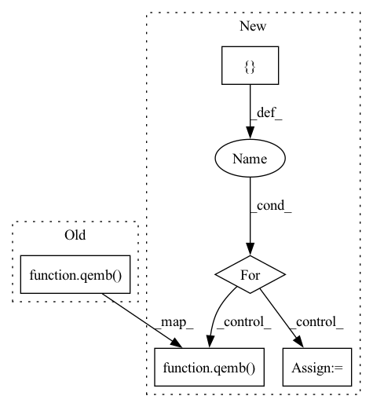

Pattern ID :6529

Before Change
qweight = torch.quantize_per_channel(weights, qparams[0], qparams[1], axis=0, dtype=torch.quint8)
qemb = nnq.EmbeddingBag(num_embeddings=num_embeddings, embedding_dim=embedding_dim,
include_last_offset=True, mode="sum", _weight=qweight)
qemb(indices, offsets)
// Ensure the module has the correct weights
self.assertEqual(qweight, qemb.weight())
After Change
offsets = torch.cat((offsets, torch.tensor([indices.size(0)], dtype=torch.long)), 0)
weights = torch.from_numpy((np.random.random_sample((num_embeddings, embedding_dim)) + 1).astype(np.float32))
for qdtype in [torch.quint8, torch.quint4x2]:
obs = PerChannelMinMaxObserver(dtype=qdtype, qscheme=torch.per_channel_affine_float_qparams, ch_axis=0)
obs(weights)
// Get the scale and zero point for the weight tensor
qparams = obs.calculate_qparams()
// Quantize the weights to 8bits
qweight = torch.quantize_per_channel(weights, qparams[0], qparams[1], axis=0, dtype=qdtype)
qemb = nnq.EmbeddingBag(num_embeddings=num_embeddings, embedding_dim=embedding_dim,
include_last_offset=True, mode="sum", _weight=qweight, dtype=qdtype)
qemb(indices, offsets)
// Ensure the module has the correct weights
self.assertEqual(qweight, qemb.weight())
w_packed = qemb._packed_params._packed_weight
module_out = qemb(indices, offsets)
// Call the qembedding_bag operator directly
if qdtype == torch.quint8:
ref = torch.ops.quantized.embedding_bag_byte(w_packed, indices, offsets, mode=0,
per_sample_weights=None,
include_last_offset=True)
else:
ref = torch.ops.quantized.embedding_bag_4bit(w_packed, indices, offsets, mode=0,
per_sample_weights=None,
include_last_offset=True)
In pattern: SUPERPATTERN
Frequency: 3
Non-data size: 5
Instances
Fragment ID: 22585818
Project Name: pytorch/pytorch
Commit Name: 43dc7ef9335158fbdb124e5fc0952789e528d06e
Time: 2020-10-06
Author: supriyar@fb.com
File Name: test/quantization/test_quantized_module.py
M Class Name: TestStaticQuantizedModule
N Class Name: TestStaticQuantizedModule
M Method Name: test_embedding_bag_api(5)
N Method Name: test_embedding_bag_api(5)
M Parent Class: QuantizationTestCase
N Parent Class: QuantizationTestCase
M File Name: test/quantization/test_quantized_module.py
N File Name: test/quantization/test_quantized_module.py
M Start Line: 771
M End Line: 792
N Start Line: 766
N End Line: 803
'>
Before Change
qweight = torch.quantize_per_channel(weights, qparams[0], qparams[1], axis=0, dtype=torch.quint8)
qemb = nnq.Embedding(num_embeddings=num_embeddings, embedding_dim=embedding_dim)
qemb.set_weight(qweight)
qemb(indices)
// Ensure the module has the correct weights
self.assertEqual(qweight, qemb.weight())
After Change
obs(weights)
qparams = obs.calculate_qparams()
dtypes = [torch.quint4x2, torch.quint8]
embedding_funcs = [torch.ops.quantized.embedding_4bit, torch.ops.quantized.embedding_byte]
for dtype, embedding_func in zip(dtypes, embedding_funcs):
// Quantize the weights
qweight = torch.quantize_per_channel(weights, qparams[0], qparams[1], axis=0, dtype=dtype)
qemb = nnq.Embedding(num_embeddings=num_embeddings, embedding_dim=embedding_dim, dtype=dtype)
qemb.set_weight(qweight)
qemb(indices)
// Ensure the module has the correct weights
self.assertEqual(qweight, qemb.weight())
w_packed = qemb._packed_params._packed_weight
module_out = qemb(indices)
// Call the bit qembedding operator directly
ref = embedding_func(w_packed, indices, pruned_weights=False)
self.assertEqual(module_out, ref)
self.checkEmbeddingSerialization(qemb, num_embeddings, embedding_dim, indices, None, set_qconfig=False,
is_emb_bag=False, dtype=dtype)
'>
Fragment ID: 22585820
Project Name: pytorch/pytorch
Commit Name: 9f512e129b48a84ca742f64d1a4c742361b3300c
Time: 2021-12-18
Author: dzdang@fb.com
File Name: test/quantization/core/test_quantized_module.py
M Class Name: TestStaticQuantizedModule
N Class Name: TestStaticQuantizedModule
M Method Name: test_embedding_api(4)
N Method Name: test_embedding_api(4)
M Parent Class: QuantizationTestCase
N Parent Class: QuantizationTestCase
M File Name: test/quantization/core/test_quantized_module.py
N File Name: test/quantization/core/test_quantized_module.py
M Start Line: 816
M End Line: 837
N Start Line: 816
N End Line: 844
'>
Before Change
qweight = torch.quantize_per_channel(weights, qparams[0], qparams[1], axis=0, dtype=torch.quint8)
qemb = nnq.Embedding(num_embeddings=num_embeddings, embedding_dim=embedding_dim)
qemb.set_weight(qweight)
qemb(indices)
// Ensure the module has the correct weights
self.assertEqual(qweight, qemb.weight())
After Change
qparams = obs.calculate_qparams()
dtypes = [torch.quint4x2, torch.quint8]
embedding_funcs = [torch.ops.quantized.embedding_4bit, torch.ops.quantized.embedding_byte]
for dtype, embedding_func in zip(dtypes, embedding_funcs):
// Quantize the weights
qweight = torch.quantize_per_channel(weights, qparams[0], qparams[1], axis=0, dtype=dtype)
qemb = nnq.Embedding(num_embeddings=num_embeddings, embedding_dim=embedding_dim, dtype=dtype)
qemb.set_weight(qweight)
qemb(indices)
// Ensure the module has the correct weights
self.assertEqual(qweight, qemb.weight())
w_packed = qemb._packed_params._packed_weight
module_out = qemb(indices)
// Call the bit qembedding operator directly
ref = embedding_func(w_packed, indices, pruned_weights=False)
self.assertEqual(module_out, ref)
self.checkEmbeddingSerialization(qemb, num_embeddings, embedding_dim, indices, None, set_qconfig=False,
is_emb_bag=False, dtype=dtype)
'>
Fragment ID: 22585822
Project Name: pytorch/pytorch
Commit Name: bfdf45cc8950c1f5a5e448217cdfda3591da81d0
Time: 2022-02-04
Author: dzdang@umich.edu
File Name: test/quantization/core/test_quantized_module.py
M Class Name: TestStaticQuantizedModule
N Class Name: TestStaticQuantizedModule
M Method Name: test_embedding_api(4)
N Method Name: test_embedding_api(4)
M Parent Class: QuantizationTestCase
N Parent Class: QuantizationTestCase
M File Name: test/quantization/core/test_quantized_module.py
N File Name: test/quantization/core/test_quantized_module.py
M Start Line: 911
M End Line: 932
N Start Line: 911
N End Line: 939